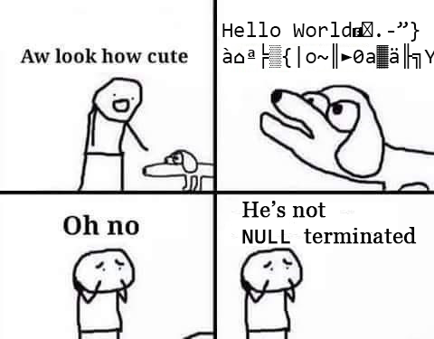
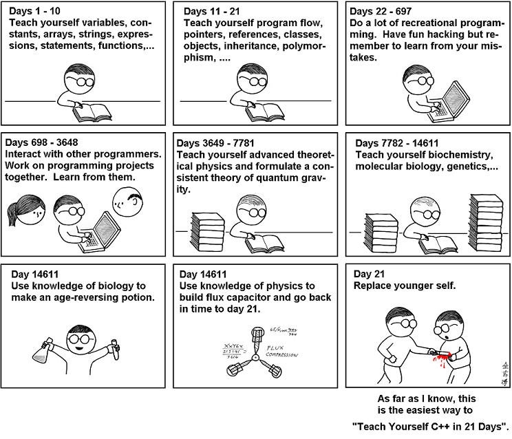
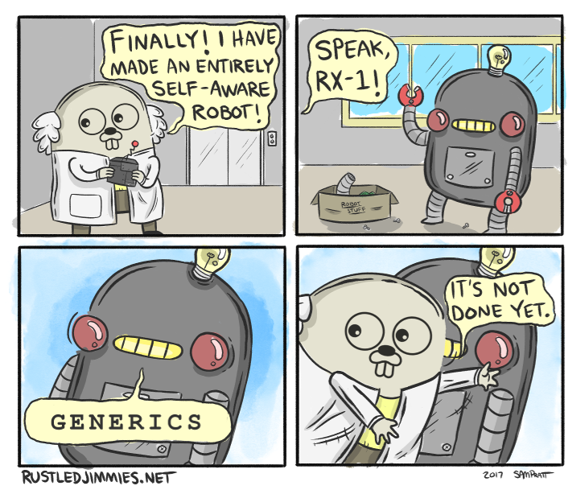
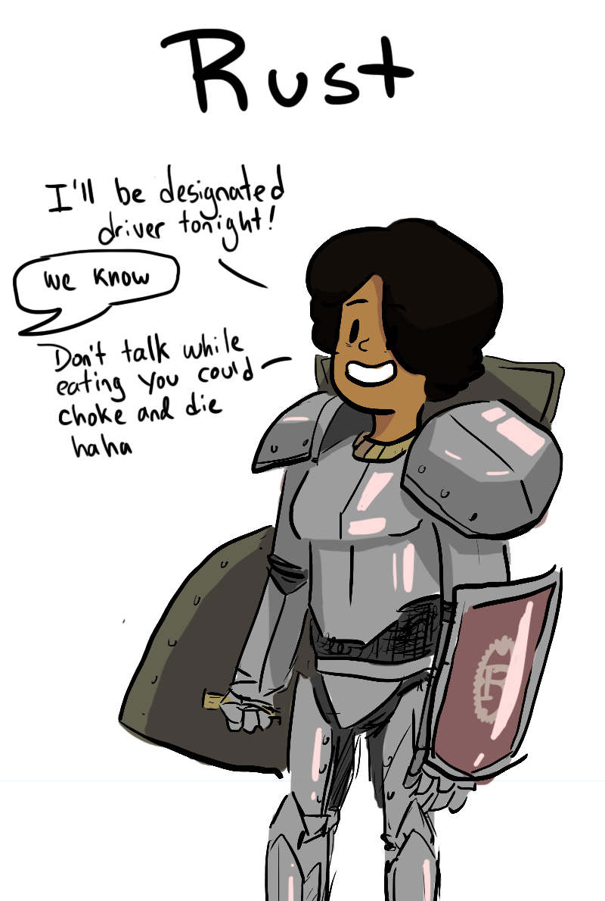

Even though we mostly write web applications these days, every once in a while you need to write, say, a CLI app. Sometimes these have requirements that go beyond a glorified shell script (read: gotta be fast), in which case here are your alternatives:
C

C++
Same as above, but added templates and custom syntax.

Golang

Rust

the joke is lighter because the author actually likes Rust ;)
Crystal has at least two mature Rails-style web frameworks:
Amber is a web application framework written in Crystal inspired by Kemal, Rails, Phoenix and other popular application frameworks.
The purpose of Amber is not to create yet another framework, but to take advantage of the beautiful Crystal language capabilities and provide engineers and the Crystal community with an efficient, cohesive, well maintained web framework that embraces the language philosophies, conventions, and guidelines.
Amber borrows concepts that have already been battle tested and successful, and embraces new concepts through team and community collaboration and analysis, which also aligns with Crystal's philosophy.
This article features some amazing benchmarks.
Type safe database queries, rock solid routing, type safe forms and validations, and more. This is how Lucky helps you find errors before they reach your customers, write fewer tests, and spend less time fixing embarrassing bugs.
Both make use of Crystal's type safety to prevent bugs, and follow the conventions (i.e. Rails) we already know and love.
While researching for this, I found this article, "My journey in to Crystal from Ruby", with a candid portrait of a (good) Rails to Lucky migration.
def shout(x) # Notice that both Int32 and String respond_to `to_s` x.to_s.upcase end foo = ENV["FOO"]? || 10 typeof(foo) # => (Int32 | String) typeof(shout(foo)) # => String
if rand(2) > 0 my_string = "hello world" end puts my_string.upcase
When the above example is compiled, it returns a type error:
crystal /tmp/nullcheck.cr
Error in /tmp/nullcheck.cr:5: undefined method 'upcase' for Nil (compile-time type is (String | Nil))
puts my_string.upcase ^~~~~~
HTTP server from the book:
require "http/server" server = HTTP::Server.new do |context| context.response.content_type = "text/plain" context.response.print "Hello world! The time is #{Time.now}" end address = server.bind_tcp 8080 puts "Listening on http://#{address}" server.listen
"But isn't this just plain Ruby?", those of you who know it may ask. Thanks to Crystal's awesome type inference, we're able to write type-safe code without all the extra type-ing.
From the Crystal documentation on concurrency:
A Crystal program executes in a single operating system thread, except the Garbage Collector (GC) which implements a concurrent mark-and-sweep (currently Boehm GC).
(I think that's where we are with MRI. Anyone knows anything about parallelism in JRuby?)
Crystal has CSP-inspired concurrency, as the following example shows:
channel = Channel(Int32).new total_lines = 0 files = Dir.glob("*.txt") files.each do |f| spawn do lines = File.read(f).lines.size channel.send lines end end files.size.times do total_lines += channel.receive end puts total_lines
Crystal comes with a fully-featured spec library in the Spec module. It provides a structure for writing executable examples of how your code should behave.
Inspired by Rspec, it includes a domain specific language (DSL) that allows you to write examples in a way similar to plain english.
require "spec" describe Array do describe "#size" do it "correctly reports the number of elements in the Array" do [1, 2, 3].size.should eq 3 end end describe "#empty?" do it "is true when no elements are in the array" do ([] of Int32).empty?.should be_true end it "is false if there are elements in the array" do [1].empty?.should be_false end end end
macro define_method(name, content) def {{name.id}} {{content}} end end
You can invoke a fixed subset of methods on AST nodes at compile-time. These methods are documented in a fictitious Crystal::Macros module.
DX is important too, and to make our developer lives easier, there are some awesome tools for that:
Some interesting comments from this AMA with the language authors:
I've been using Crystal for microservices/REST APIs in the last two months. It actually fits pretty well with those kinds of applications. The code ended up smaller and more well structured than the Node.js version, and it actually runs 2x-5x faster, depending on the endpoint complexity.
AFAIK there are also some folks working on more complex stuff such as machine-learning and game engines using Crystal, so its probably a good contender for those tasks too.
Compilers and command line tools are for sure good fits. But we have also create bots (slack / twilio / telegram), some other microservices and small web apps with some UI.
Depending on your interest crystal could be good enough for game dev, using c libs in a more friendly way, and data science.